In statistical physics, the Ising model treats a magnet as a lattice of interacting spins. Each spin can be in one of two states: +1 (up) or -1 (down). Even this minimal model captures important collective behavior, including the paramagnetic-ferromagnetic phase transition.
For 2D lattices with nearest-neighbor interactions and no external field, the critical temperature is known analytically from Onsager's solution, Tc = 2.269 (for kB = J = 1). Near this point, fluctuations become large and simulations are essential for studying finite-size behavior.
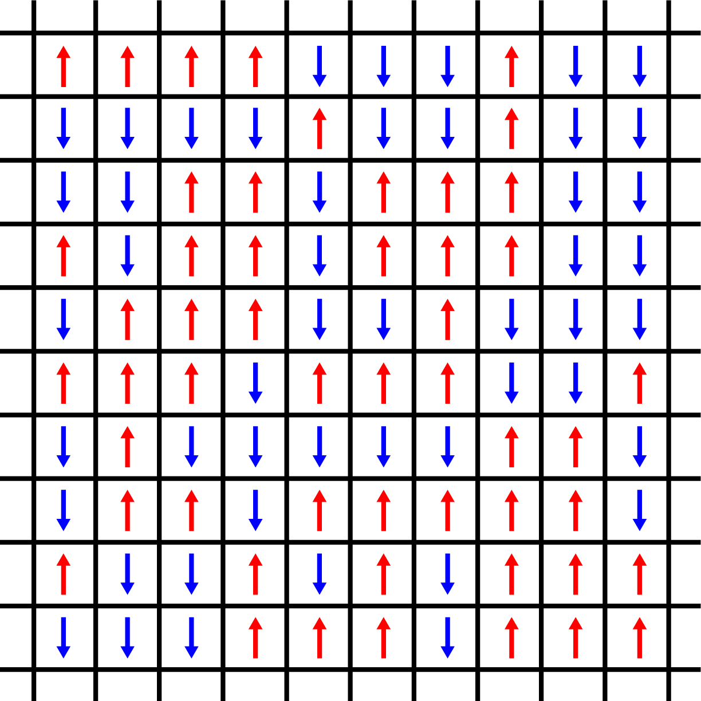
Metropolis Sampling for the Ising Model
A standard way to probe Ising dynamics is Monte Carlo simulation using the Metropolis algorithm. At each spin site, we compute the energy difference associated with a tentative flip and apply the acceptance rule based on temperature.
1. Choose an initial state S(0) = (S_1, ..., S_N)
2. Select a site i and compute DeltaE = -2 S_i h_i
3. If DeltaE >= 0, accept the flip S_i -> -S_i
4. If DeltaE < 0, draw r in [0, 1]
Accept if r < exp(DeltaE / (k_B T)); otherwise reject
5. Repeat until equilibrium and sampling criteria are metA direct implementation updates one spin at a time. This is simple and correct, but throughput becomes a bottleneck for larger lattices or many Monte Carlo sweeps.
import numpy as np
import matplotlib.pyplot as plt
from numba import njit
import time
lattice_n = 512
lattice_m = lattice_n
seed = 1
temp = 0.5
eq_steps = 1000
J = 1
h = 0
@njit
def initial_state(N, M):
return np.random.choice(np.array([-1, 1]), size=(N, M))
@njit
def mc_move(lattice, inv_T):
n = lattice.shape[0]
m = lattice.shape[1]
for i in range(n):
for j in range(m):
ipp = (i + 1) if (i + 1) < n else 0
jpp = (j + 1) if (j + 1) < m else 0
inn = (i - 1) if (i - 1) >= 0 else (n - 1)
jnn = (j - 1) if (j - 1) >= 0 else (m - 1)
nb = lattice[ipp, j] + lattice[i, jpp] + lattice[inn, j] + lattice[i, jnn]
spin = lattice[i, j]
deltaE = -2 * spin * (J * nb + h)
if deltaE >= 0:
lattice[i, j] = -spin
elif np.random.rand() < np.exp(deltaE * inv_T):
lattice[i, j] = -spin
return lattice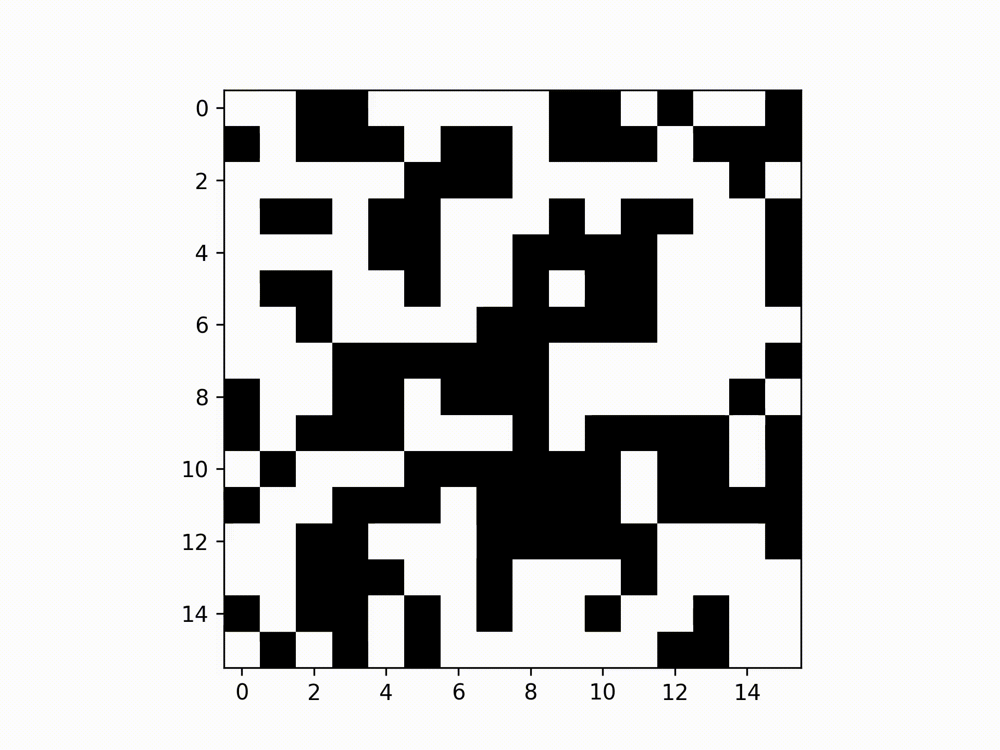
Why Checkerboard Decomposition?
Naively updating all spins in parallel is unsafe because neighboring spins depend on one another. Simultaneous writes can introduce race conditions and inconsistent local environments.
Checkerboard decomposition solves this by splitting the lattice into two disjoint sub-lattices (black and white), analogous to a chessboard pattern. Since each black spin only neighbors white spins (and vice versa), one color can be updated in parallel while reading from the opposite color.
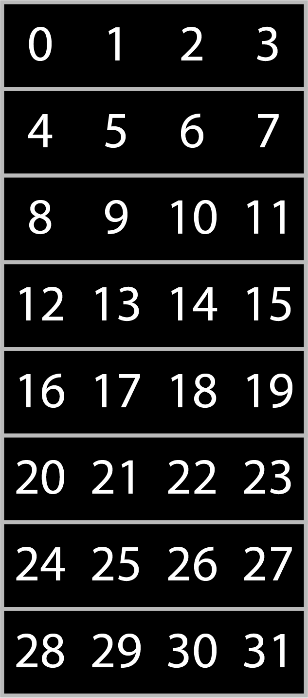
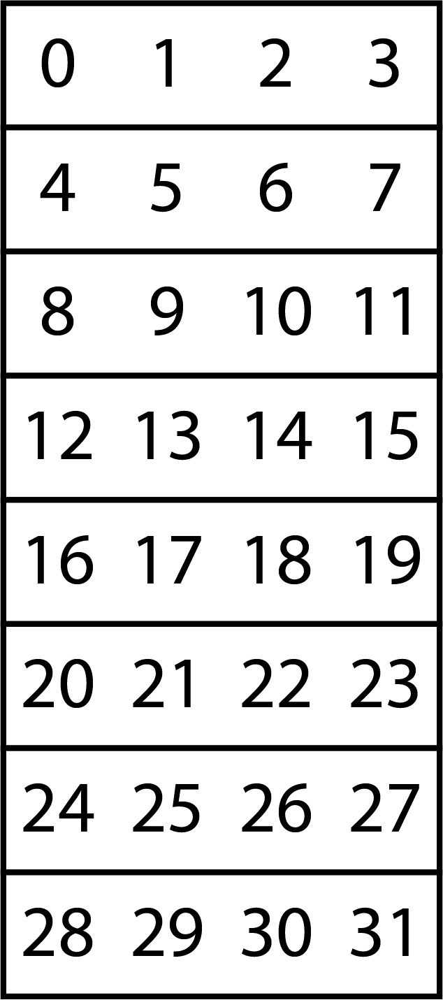
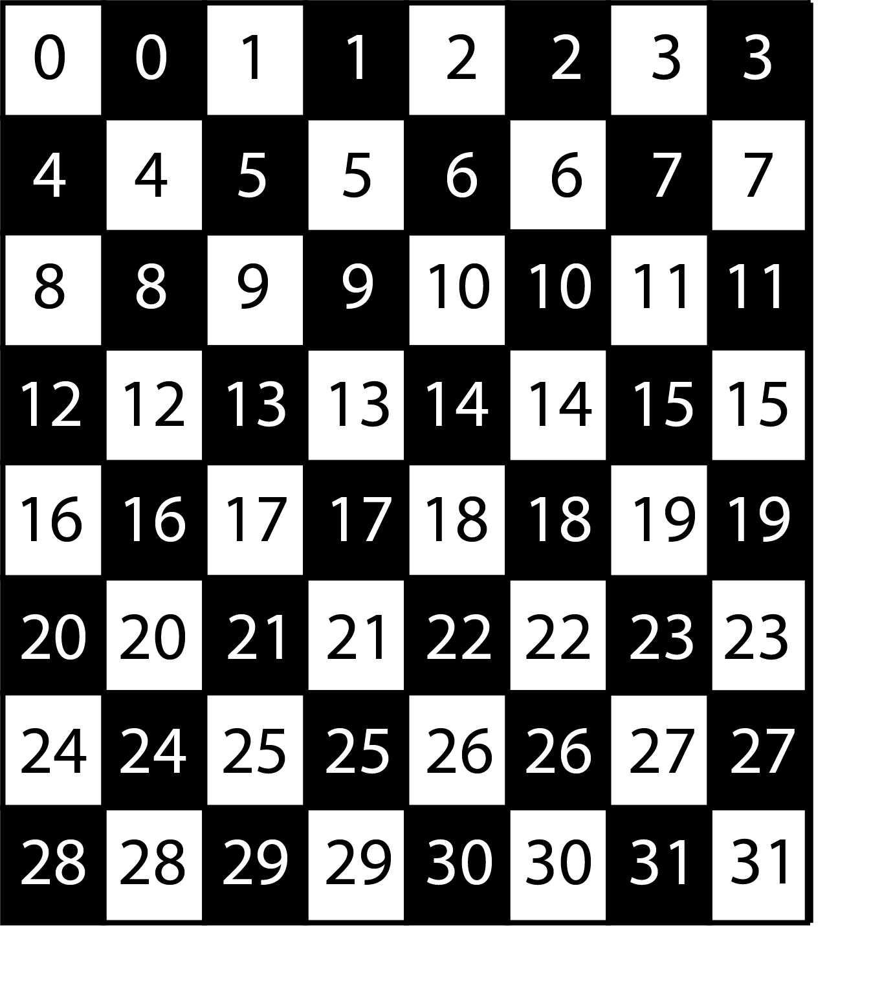
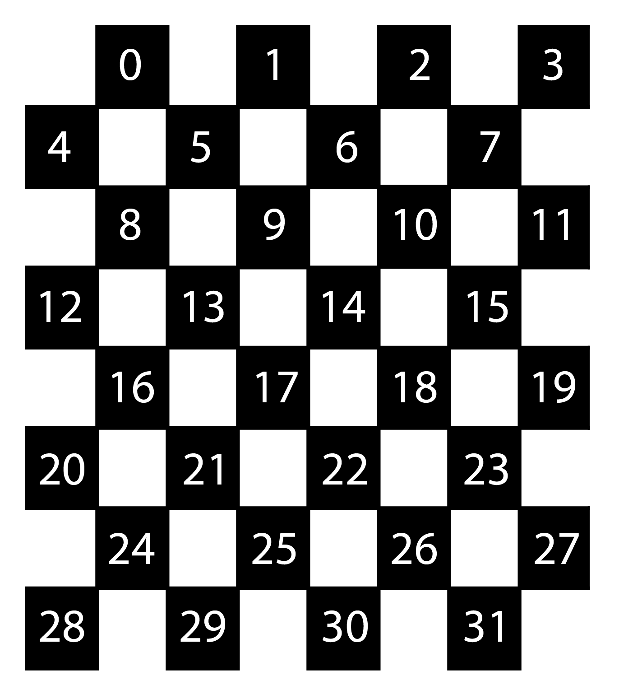
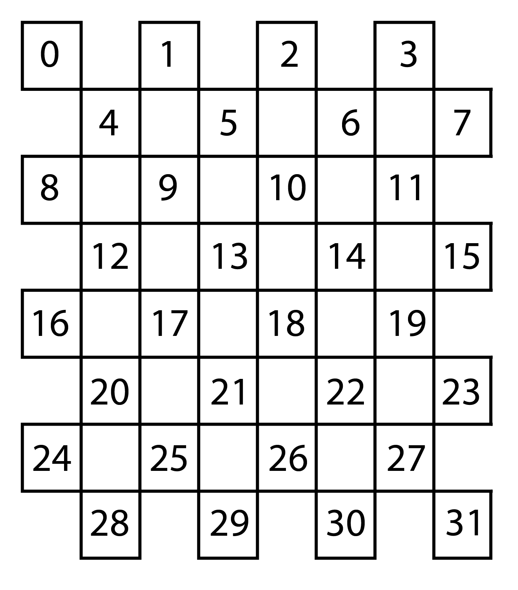
Checkerboard Update Procedure
- Generate random values for one color as an n x (m/2) array.
- Update all spins of that color in parallel using opposite-color neighbor values.
- Apply the Metropolis criterion on each site: compute DeltaE and accept/reject per random draw.
- Swap colors and repeat to complete one full sweep.
In practice, this pattern is well suited for data-parallel execution on multi-core CPUs and GPUs. The key is preserving correctness while exposing enough independent work to amortize parallel overhead.
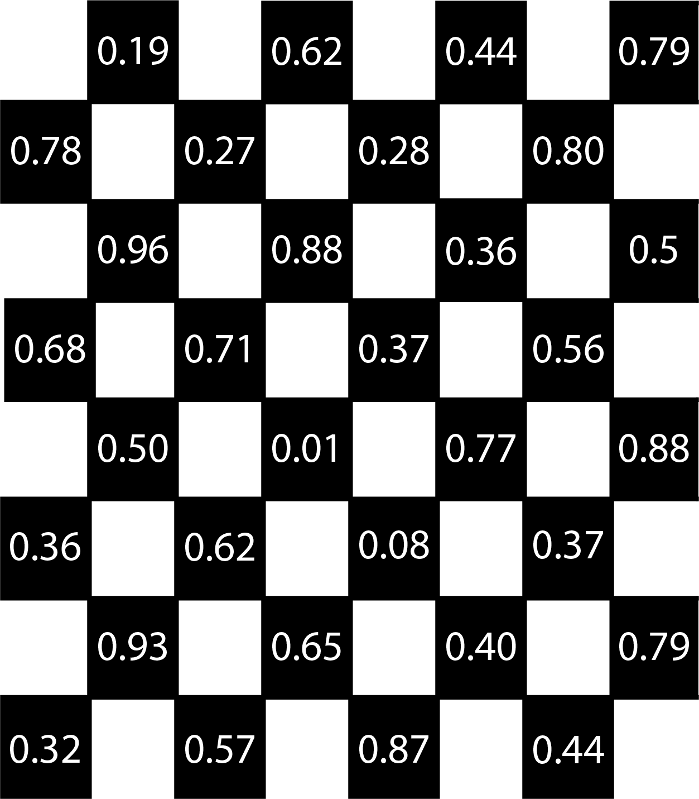
Numba-Based Parallel Implementation
import numpy as np
import matplotlib.pyplot as plt
from numba import njit, prange
import time
lattice_n = 512
lattice_m = lattice_n
seed = 1
temp = 0.5
eq_steps = 1000
J = 1
h = 0
@njit
def generate_lattice(N, M):
return np.random.choice(np.array([-1, 1], dtype=np.int8), size=(N, M))
@njit
def generate_array(N, M):
return np.random.rand(N, M)
@njit(parallel=True)
def mc_move(lattice, op_lattice, randvals, is_black, inv_temp):
n, m = lattice.shape
for i in prange(n):
for j in prange(m):
ipp = (i + 1) if (i + 1) < n else 0
jpp = (j + 1) if (j + 1) < m else 0
inn = (i - 1) if (i - 1) >= 0 else (n - 1)
jnn = (j - 1) if (j - 1) >= 0 else (m - 1)
if is_black:
joff = jpp if (i % 2) else jnn
else:
joff = jnn if (i % 2) else jpp
nn_sum = op_lattice[inn, j] + op_lattice[i, j] + op_lattice[ipp, j] + op_lattice[i, joff]
spin_i = lattice[i, j]
deltaE = -2 * spin_i * (J * nn_sum + h)
if deltaE >= 0:
lattice[i, j] = -spin_i
elif randvals[i, j] < np.exp(deltaE * inv_temp):
lattice[i, j] = -spin_i
return latticePerformance Takeaway
Side-by-side comparison shows the checkerboard method generally outperforms single-spin sequential updates, especially as lattice size grows. For very small grids, parallel overhead can occasionally reduce speedup, but the trend favors parallel updates for practical simulation scales.
This aligns with our reported results in Proceedings of the Samahang Pisika ng Pilipinas 2023, where CPU and mobile GPU implementations benefited from checkerboard-style parallelization.
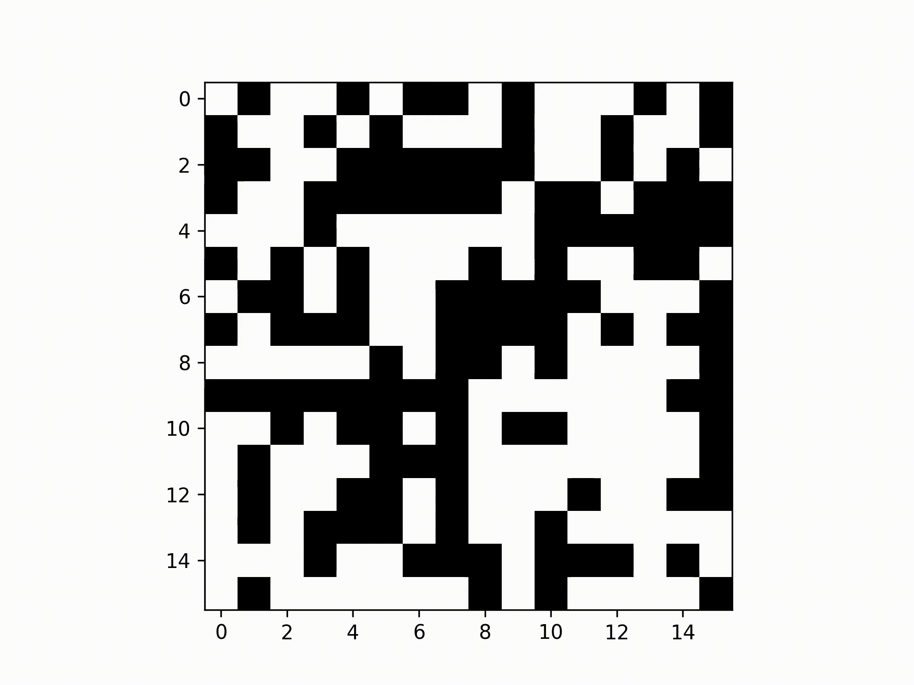
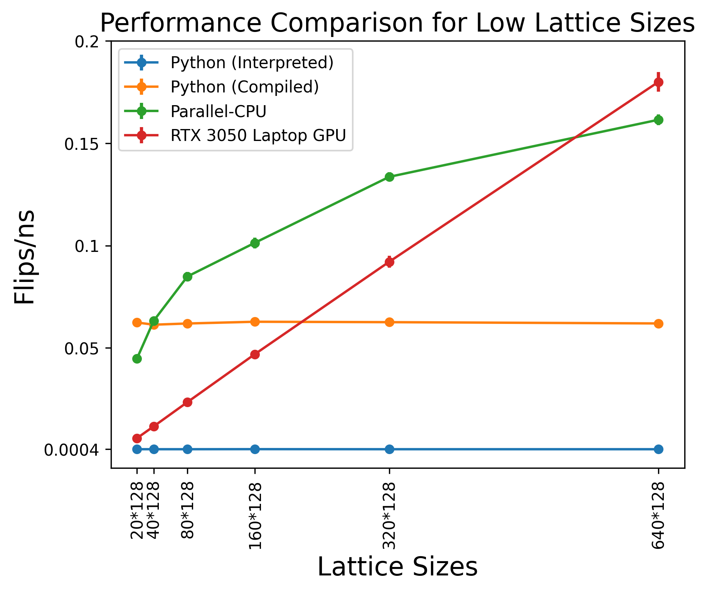
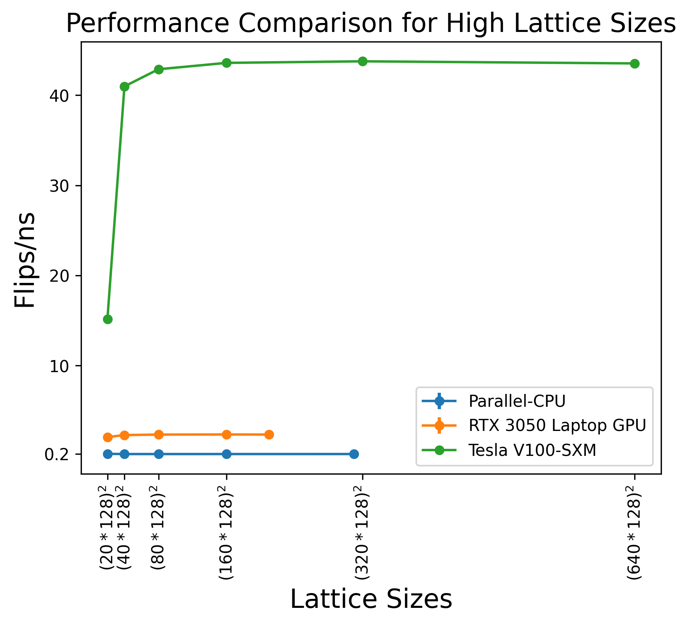
Conclusion
Accelerating Monte Carlo simulation of the 2D Ising model enables larger system sizes, longer simulations, and more robust analysis near critical points. Checkerboard Metropolis updates provide a practical route to parallel speedups while retaining the physical update logic of the original algorithm.
Package Requirements
- numpy
- matplotlib
- numba
References
- S. G. Brush, "History of the Lenz-Ising model," Rev. Mod. Phys., vol. 39, no. 4, pp. 883-893, 1967, doi: 10.1103/RevModPhys.39.883.
- H. Gould and J. Tobochnik, Statistical and Thermal Physics: With Computer Applications. Princeton University Press, 2010.
- M. E. J. Newman and G. T. Barkema, Monte Carlo methods in statistical physics. Oxford University Press, 1999.
- N. Metropolis, A. W. Rosenbluth, M. N. Rosenbluth, A. H. Teller, and E. Teller, "Equation of state calculations by fast computing machines," J. Chem. Phys., vol. 21, no. 6, pp. 1087-1092, 1953, doi: 10.1063/1.1699114.
- T. Preis, P. Virnau, W. Paul, and J. J. Schneider, "GPU accelerated Monte Carlo simulation of the 2D and 3D Ising model," J. Comput. Phys., vol. 228, no. 12, pp. 4468-4477, 2009, doi: 10.1016/j.jcp.2009.03.018.
- K. A. G. Andal and R. C. Simon, "Parallel Monte Carlo simulation of the 2D Ising model using CPU and mobile GPU," in Proceedings of the Samahang Pisika ng Pilipinas, 2023, p. SPP-2023-PA-06.
- J. Romero, M. Bisson, M. Fatica, and M. Bernaschi, "High performance implementations of the 2D Ising model on GPUs," Comput. Phys. Commun., vol. 256, p. 107473, 2020, doi: 10.1016/j.cpc.2020.107473.